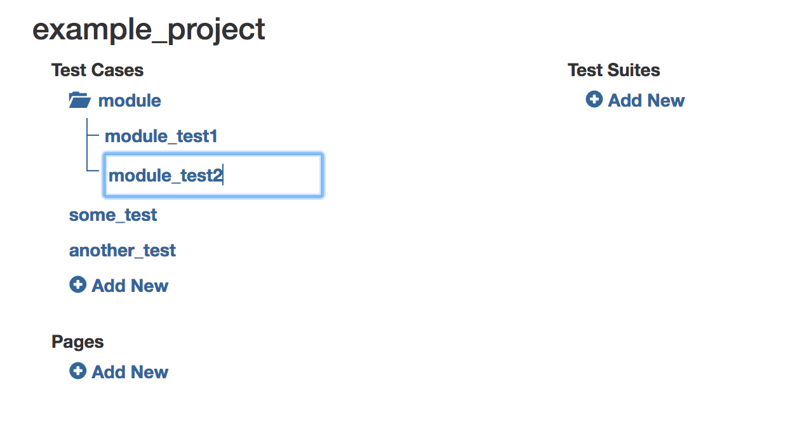
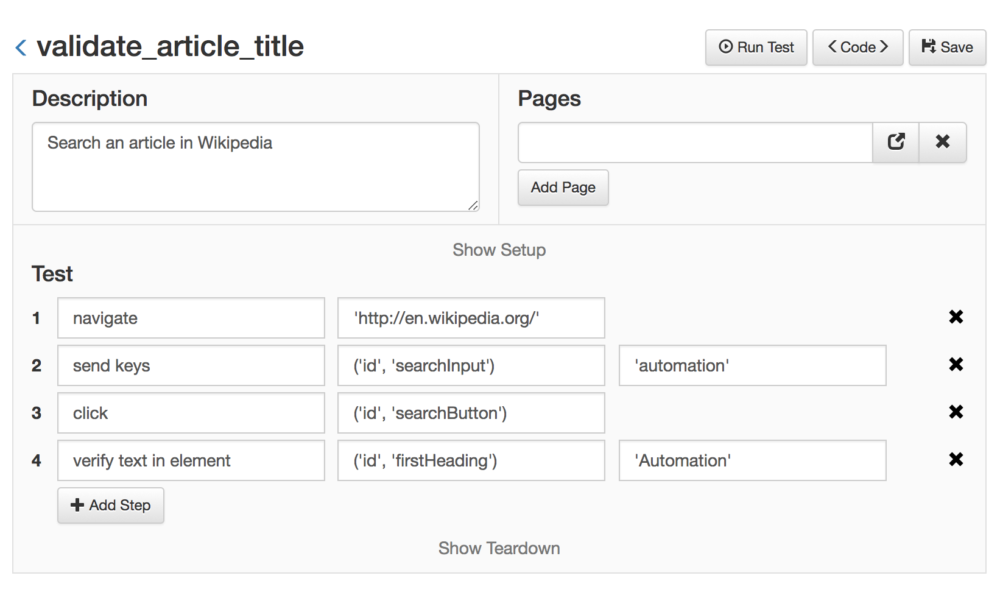

Adding Tests¶
Tests should be placed in the 'tests' folder of a project. You can use more folders to further group and arrange the tests.
Add a new test¶
Add a new test using the console:
python golem.py createtest <project name> <test name>
Add a test from the Web Module:

Note
It is possible to add folders to the list by appending '/' at the end
A new test created with either of these options will have the following structure:
description = ''
pages = []
def setup(data):
pass
def test(data):
pass
def teardown(data):
close()
And a test as seen with the Web Module has the following structure:

The description is used to define the goal of the test and its value is displayed in the generated report, afterwards.
Pages is a list of the pages of the application under test that this test will interact with. More about pages later.
After that, a test implements three functions, setup, test and teardown. These functions are always executed in that order.
Use the setup function to separate the preconditions from the main test steps.
The test method should contain the steps of the test and should have at least one validation at the end.
The teardown function is always executed, even if the other functions fail. So use the Teardown function to run final commands needed to set everything back to the original position. It is used most commonly to close the browser.
A test example¶
Next is a bare minimum test that navigates to 'en.wikipedia.org', searches an article and validates that the title of the article is correct.
validate_article_title.py
description = 'Search an article in Wikipedia'
def test(data):
go_to('http://en.wikipedia.org/')
send_keys(('id', 'searchInput'), 'ostrich')
click(('id', 'searchButton'))
verify_text_in_element(('id', 'firstHeading'), 'Common Ostrich')
def teardown():
close()
And seeing it with the Web Module:

Run the test¶
Note
Golem (using Selenium) needs the webdriver executables. You have to download the latest webdriver executables and place them where Golem can find them (by default, in the test_directory/drivers folder).
To learn how to configure the drivers check the Web Drivers page.
To run the test just press the 'Run Test' button in the Web Module. The test can also be run using the command line with the following command:
python golem.py run <project_name> validate_article_title
Golem Actions¶
In the previous example, go_to, send_keys, click, and verify_text... are Golem actions. Check out the entire list of actions for more information.
Next, go to Managing Test Data